设计模式读书笔记
设计模式的学习书籍我看的是刘伟老师的《设计模式的艺术》
图片来源于《设计模式的艺术》
设计模式概念
定义
设计模式是一套被反复使用的、多数人知晓的、经过分类的、代码设计经验的总结。
使用设计模式是为了重用代码、让代码更容易被他人理解并且保证代码的可靠性
关键要素
模式名称、问题、解决方案和效果
学习关键
- 这个设计模式的意图是什么
- 解决一个什么样的问题
- 什么时候可以使用它
- 如果解决问题
- 掌握结构图
- 关键代码
- 应用实例
- 生活上
- 软件上
- 模式的优点
- 模式的缺点
- 使用时应该注意什么
UML
关联关系 Association
关联关系是一种结构化关系
关联关系用来表示一类对象对另一类对象之间有联系。
通常将一个类的对象作为另一个类的成员变量
双向关联
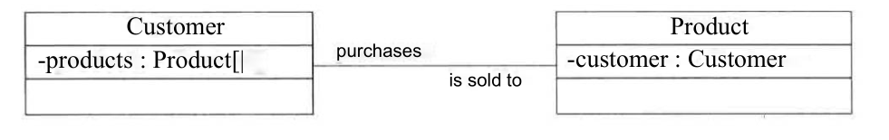
1 | public class Customer { |
1 | public class Product { |
单向关联
单向关联用带箭头的实线表示
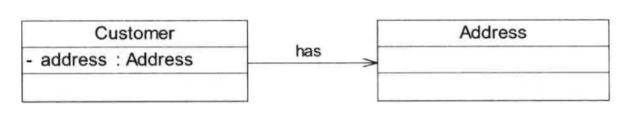
1 | public class Customer { |
自关联
自关联表示类的属性中存在该类本身。
例如链表中的结点都包含自身Node next
1 | public class Node { |
多重性关联
多重性关联关系又称为重数性（multiplicity）关联关系，表示两个关联对象在数量上的对应关系。UML中多重性在关联直线上用数字或数字范围来表示
| 表示方式 | 多重性说明 |
|---|---|
| 1..1 | 表示另一个类的一个对象只与该类的一个对象有关系 |
| 0..* | 表示另一个类的一个对象与该类的零个或多个对象有关系 |
| 1..* | 表示另一个类的一个对象与该类的一个或多个对象有关系 |
| 0..1 | 表示另一个类的一个对象与该类没有关系或只与一个对象有关系 |
| m..n | 表示另一个类的一个对象与该类最少有m个，最多n个对象有关系 （其中m <= n） |
注意：这里的数字范围靠近的那个类，指的是上面”多重性说明“中的该类，而离数字范围远的那个类指代的是另一个类
下面例子表示：*0..**靠近Button端，远离Form端。说明，Form的一个对象有Button类的零个或多个对象。
说人话：一个Form界面拥有零个或多个Button按钮。而一个按钮Button只属于一个Form界面
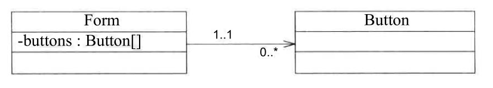
1 | public class Form { |
聚合关系 Aggregation
聚合关系表示整体和部分的关系。成员对象是整体对象的一部分，但是成员对象可以脱离整体对象独立存在。
UML中，聚合关系用带空心菱形的直线表示。（空心菱形一端指向整体对象）。
汽车发动机可以脱离汽车独立存在
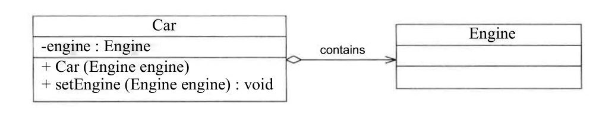
代码实现聚合关系时，成员对象通常通过构造方法、Setter方法或业务方法的参数注入到整体对象中
1 | public class Car { |
组合关系 Composition
组合关系也表示类之间整体和部分的关系。
与聚合关系的区别在于，组合关系中的整体对象能够控制成员对象的声明周期。一旦整体对象不存在，成员对象也将不存在。
总而言之，聚合关系中的成员对象可以活着离开整体对象。组合关系中的成员对象不能离开整体对象。
UML中，组合关系用带实心菱形的直线表示
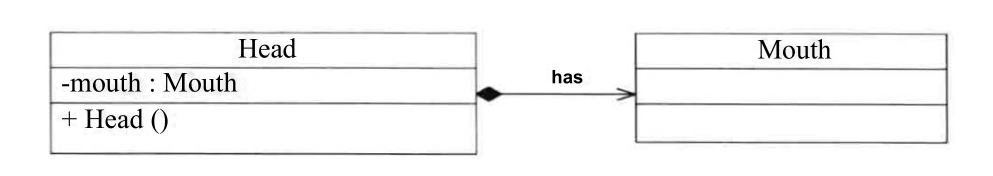
在代码实现组合关系时，通常在整体类的构造方法中直接实例化成员类
1 | public class Head { |
依赖关系 Dependency
依赖关系是一种使用关系。
在依赖关系中，某个事物如果发生了改变，则可能会影响到使用该事物的其他事物
在需要表示一个事物使用另一个事物时，使用依赖关系
UML中，依赖关系使用带箭头的虚线表示，由依赖一方指向被依赖的一方。（使用的一方指向被使用的一方）
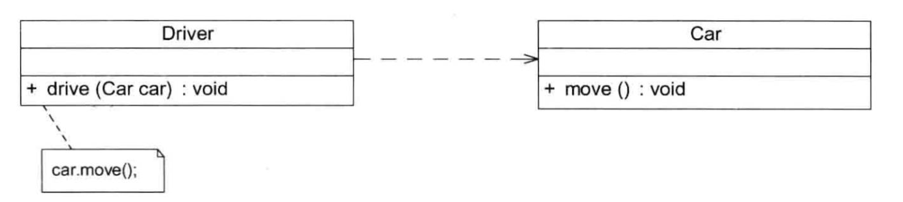
Driver类中drive(Car car)方法中，需要Car类型的对象作为参数传入，并且在该方法中调用Car.move的方法。即drive()方法依赖move()方法，所以Driver依赖Car
1 | public class Driver { |
代码实现时，依赖关系通常通过以下3中方法实现
- 将一个类（被依赖）的对象作为另一个类（依赖）中的方法的参数
- 在一个类（依赖）的方法中，将另一个类（被依赖）的对象作为其局部变量
- 在一个类（依赖）的方法中调用另一个类（被依赖）的静态方法
泛化关系 Generalization
泛化关系即继承关系。用于描述父类与子类之间的关系
在UML中，泛化关系用带空心三角形的直线表示。（由子类指向父类，即空心三角形位于父类一端）
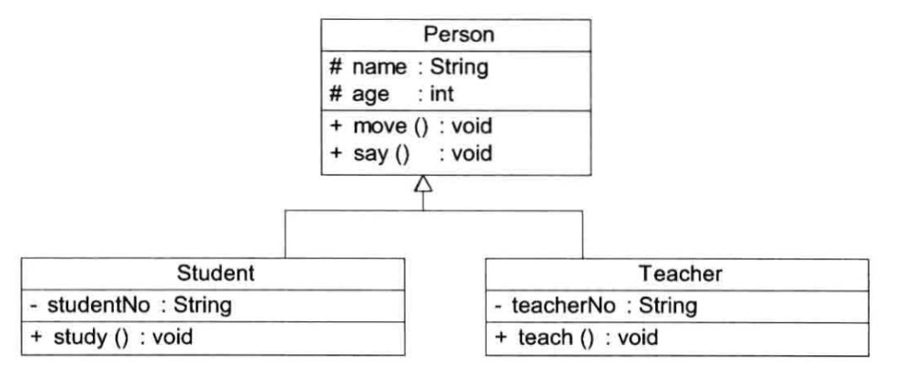
1 | public class Person { |
1 | public class Student extends Person{ |
1 | public class Teacher extends Person{ |
接口与实现关系
接口通常只有操作的声明，没有操作的实现
接口之间也存在继承关系和依赖关系
接口和类之间存在实现（Realization）关系
- 类实现了接口
- 类中的操作实现了接口中所声明的操作
在UML中，类与接口之间的实现关系用带空心三角形的虚线来表示
接口interface的UML表示
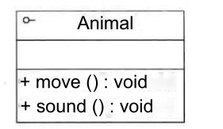
实现关系
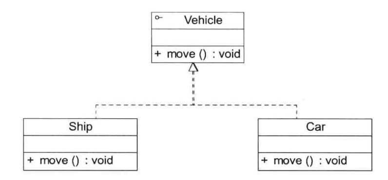
1 | public interface Vehicle { |
1 | public class Car implements Vehicle{ |
面向对象设计原则
目标
可维护性复用
- 实现设计方案或源代码的重用
- 确保系统易于扩展和维护，具有灵活性
单一职责原则（Single Responsibility Principle,SRP）
定义
一个类只负责一个功能领域中的相应职责。或者说，就一个类而言，应该只有一个引起它变化的原因
作用要求
控制类的粒度大小
- 一个类承担的职责越多，它被复用的可能性就越小
- 一个类程度的职责过多，则职责耦合在一起。其中一个职责变化可能会影响到其他职责运作
- 应该将不同的职责封装在不同的类，即不同的变化原因封装在不同的类
- 如果多个职责总是同时发生改变则可以将它们封装在一个类中
单一职责原则是实现高内聚、低耦合的指导方针
实现
要判断一个类是否符合单一职责原则，可以考虑该类是否有不止一个引起它变化的原因，从而进行拆分。同时也要考虑到其他的类是否需要使用到当前类的方法。
反例
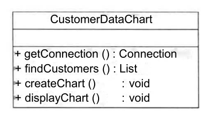
修改后
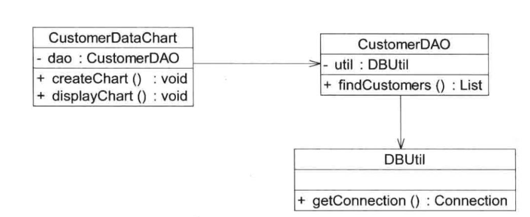
开闭原则（Open-Closed Principle, OCP）
定义
软件实体应对扩展开放，而对修改关闭。即软件实体应尽量在不修改原有代码的情况下进行扩展
- 这里的软件实体指一个软件模块、一个有多个类组成的局部结构或一个独立的类
作用要求
开闭原则是面向对象的可复用设计的基石。
软件系统面临新的需求时，应该尽量保证系统的设计框架是稳定的。
- 方便对系统进行扩展，且扩展时无须修改现有代码
- 使得软件系统在拥有适应性和灵活性的同时具备较好的稳定性和延续性
实现
抽象化是开闭原则的关键
需要对系统进行抽象化设计
- 可以为系统定义相对稳定的抽象层，而将不同的实现行为移至具体的实现层中完成
- 例如接口定义抽象层，再由具体类进行扩展。而只需增加新的具体类来实现新的业务功能即可
里氏代换原则（Liskov Substitution Principle,LSP）
定义
所有引用父类对象的地方能够透明地使用其子类的对象
在软件中，将一个基类（父类）对象替换成它的子类对象，程序不会产生任何错误和异常，但反之不成立。
作用要求
里氏代换原则是实现开闭原则的重要方式之一。
- 在程序中尽量使用基类类型来对对象进行定义，而在运行时，再确定其子类类型，用子类来替换父类对象
- 父类设计为抽象类或接口，让子类继承父类或实现父类接口，并实现在父类声明的方法。运行时子类实例替换父类实例，可以扩展系统的功能，无须修改原子类的代码
实现
在Java实现多态的时候，有着里氏代换原则的味道
依赖倒转原则（Dependence Inversion Principle,DIP）
定义
抽象不应该依赖于细节，细节应该依赖于抽象
要针对接口编程，而不是针对实现编程
作用要求
依赖倒转原则是面向对象设计的主要实现机制之一，是系统抽象化的具体实现
依赖倒转原则要求在程序代码中，传递参数时或在关联关系中，尽量引用层次高的抽象层。即使用接口和抽象类进行变量类型声明、参数类型声明、方法返回类型声明以及数据类型的转换等，而不要用具体类做这些事。
一个具体类应当只实现接口或抽象类中声明过的方法，而不要给出多余的方法，否则将无法调用到在子类中增加的新方法
在实现依赖倒置时，需要针对抽象层编程，而将具体的类对象通过依赖注入（Dependency Injection，DI）的方式，注入到其他对象中去。
依赖注入：一个对象要与其他对象发生依赖关系时，通过抽象来注入所依赖的对象
- 构造注入
- 通过构造函数传入具体类的对象
- 设值注入（Setter注入）
- 通过Setter方法来传入具体类的对象
- 接口注入
- 通过实现在接口中声明的业务方法来传入具体类的对象
这些方法在定义时使用的是抽象类型，在运行时再传入具体类型的对象，由子类对象来覆盖父类对象。
实现
反例
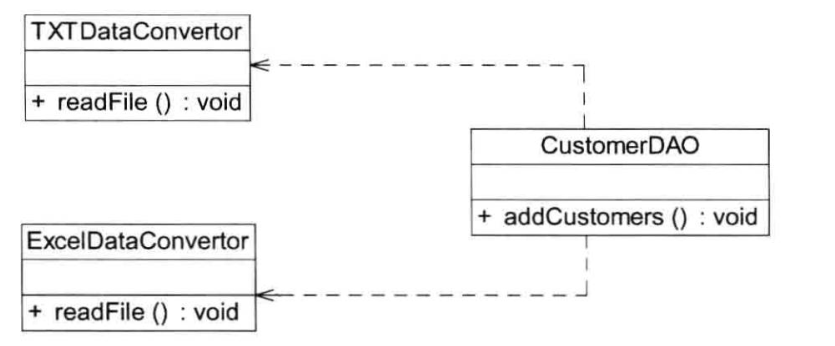
修改后
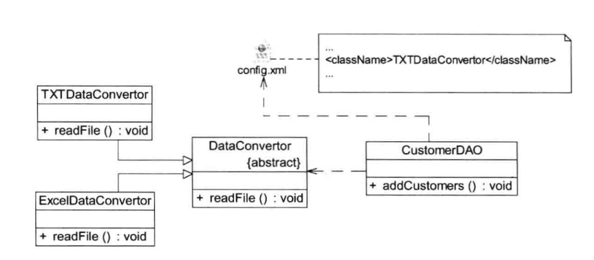
- 开闭原则是目标
- 里氏代换原则是基础
- 依赖倒转是手段
接口隔离原则（Interface Segregation Principle,ISP）
定义
使用多个专门的接口，而不使用单一的总接口。
即客户端不应该依赖那些它不需要的接口
接口含义
- 逻辑上的抽象：一个类型所具有的方法特征的集合
- 接口的划分带来类型的划分。一个接口只能代表一个角色，每个角色都有它特定的接口
- 某种语言具体的“接口 ”定义，有严格的定义和结构
- 仅仅提供客户端需要的行为，客户端不需要的行为则隐藏起来
作用要求
当一个接口太大时，需要将它分割成一些更细小的接口，使用该接口的客户端仅需知道与之相关的方法即可。
每一个接口应该承担一种相对独立的角色。
需要控制接口的粒度
- 接口太小会导致接口泛滥，不利维护
- 接口太大会违背接口割离原则，灵活性差，使用不方便
解决问题
如果接口承担太多职责
- 导致接口实现类庞大，需要实现接口中定义的所有方法
- 灵活性差，出现大量的空方法，导致系统产生大量的无用代码，影响代码质量
- 破坏程序的封装性
反例
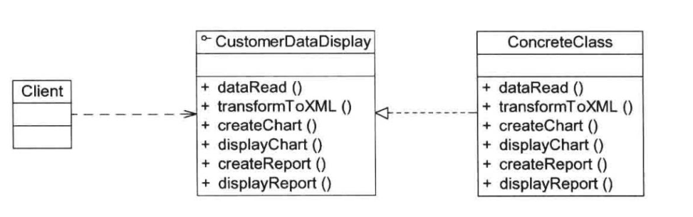
解决后
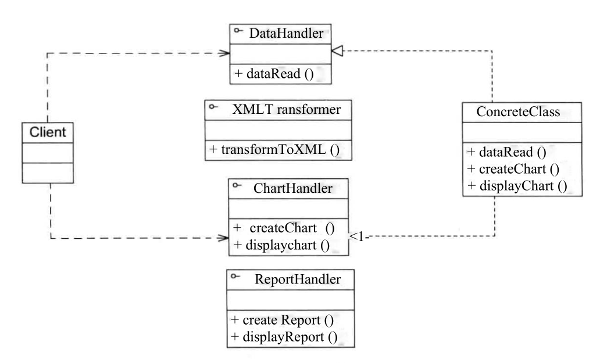
合成复用原则（Composite Reuse Principle,CRP）
定义
合成复用原则又称“组合/聚合复用原则（Composition/Aggregation Reuse Principle）”
尽量使用对象组合，而不是继承来达到复用的目的
要求作用
合成复用原则是在一个新的对象里，通过关联关系（包括组合关系和聚合关系）来使用一些已有的对象，使之成为新对象的一部分。
新对象通过委派调用已有对象的方法来达到复用功能的目的。
复用时，尽量使用组合/聚合关系（关联关系），少用继承
使用优点
复用已有的设计和实现的方法
- 通过组合/聚合关系
- 通过继承
组合/聚合可以使系统更加灵活，降低类与类之间的耦合度，一个类的变化对其他类造成的影响较小。
使用继承时，需要严格遵循里氏代换原则
继承来进行复用的主要问题在于继承复用会破坏系统的封装性。因为继承会将基类实现细节暴露给子类。从基类继承而来的实现是静态的，不可能在运行时发生改变，没有足够的灵活性
迪米特法则 （Law of Demeter,LoD）
定义
一个软件实体应当尽可能少地与其他实体发生相互作用
迪米特法则又称为最少知识原则（Least Knowledge Principle，LKP）
要求作用
如果一个系统符合迪米特法则，那么当其中某一个模块发生修改时，就会尽量少地影响其他模块，扩展会相对容易。
迪米特法则要求限制软件实体之间通信的宽度和深度。
不要和陌生人说话，只与直接朋友通信
朋友包括
- 当前对象本身
this - 以参数形式传入当前对象方法中的对象
- 当前对象的成员对象
- 如果当前对象的成员对象是一个集合，那么集合中的元素也都是朋友。
- 当前对象所创建的对象。
能够降低系统的耦合度
- 可以通过引入第三者来降低现有对象之间的耦合
在类的结构设计上，每一个类都应当尽量降低其成员变量和成员函数的访问权限
反例
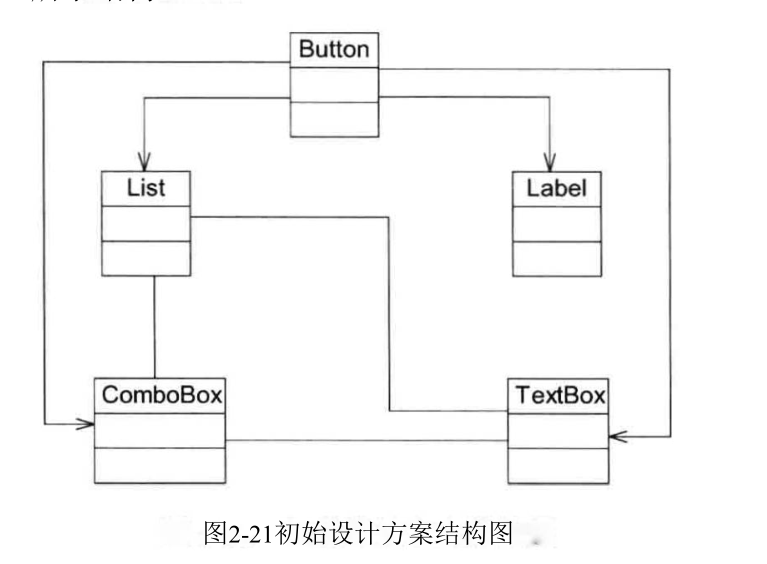
改善后
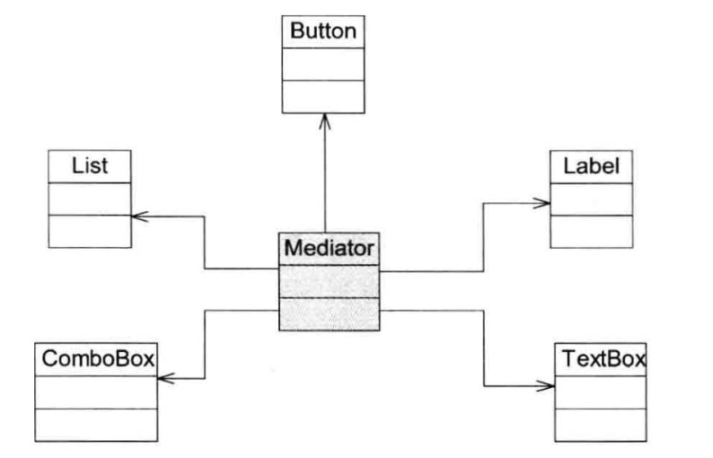
创建型模式 Creational Pattern
创建型模式关注对象的创建过程
将对象的创建和使用分离。
在使用对象时无须关心对象的创建细节，从而降低系统的耦合度，让设计方案更易于修改和扩展。
创建模式回答三个问题
- 创建什么
- 由谁创建
- 何时创建
单例模式 Singleton Pattern
定义
确保某一个类只有一个实例，而且自行实例化并向整个系统提供这个实例，这个类称为单例类，它提供全局访问的方法。
三个要点
- 某个类只能有一个实例
- 它必须自行创建这个实例
- 它必须自行向整个系统提供这个实例
内容
举例：Windows的任务管理器只能打开一个
单例模式的动机：确保对象的唯一性
- 节约系统资源
- 确保系统中的某个类只有唯一一个实例，该类创建成功后，无法再创建同类型的其它对象，所有操作都基于这个唯一实例
单例模式创建过程
- 将该类的构造器的可见性改成
private- 禁止类的外部直接使用
new来创建对象，确保实例的唯一性
- 禁止类的外部直接使用
- 在该类内部创建并保存这个唯一实例，
- 定义一个静态的该类型的私有成员变量
- 增加一个公有的静态方法
- 让外界使用该成员变量，同时需要解决实例化该成员变量的时机
示例
修改前
1 | public class TaskManager { |
重构
1 | public class TaskManager { |
解释说明
public static TaskManager getInstance()首先应该声明为public，以便外界的其他对象访问。其次，应该声明为static，因为该类的构造器已经被声明为private，不能通过new来创建对象，外界可以直接通过类名来访问。- 成员变量
private static TaskManager tm = null;为什么需要声明为静态的呢？- 首先，
getInstance()的方式声明为static的，而静态方法中只能访问静态的成员变量 - 其次，对于静态字段，即所有对象都会共享该类的静态字段，但是对于单例模式也只有唯一一个对象，这条作用不大
- 首先，
- 这种方法叫做懒汉式单例
单例模式结构图
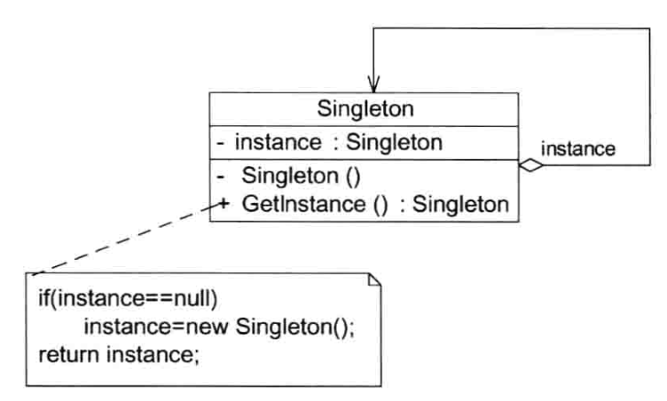
懒汉式单例存在的问题
考虑以下情景
1 | //负载均衡器 单例类 待优化版本 |
问题发现
在多线程环境中,如果线程A**第一次调用getLoadBalancer方法创建并启动负载均衡器时，if(loadBalancer == null)这条语句判断为true，因此进入实例化**的语句。
在实例化语句中，由于LoadBalancer的构造器中需要进行大量的初始化工作，需要一段时间才能够完成该操作。
而在此时（即唯一实例的负载均衡器还在创建但是没有创建完成的初始化过程中），如果另一个**线程B也再一次调用了getLoadBalancer方法。由于线程A还在初始化负载均衡器中，实际上该成员变量loadBalancer的值仍为null，因此线程B在if(loadBalancer == null)的条件判断也为true，因此也去实例化**一个负载均衡器对象。
最终导致创建了多个instance对象，违背了单例模式的初衷，导致系统发生错误。
解决方式饿汉式单例类（Eager Singleton）和懒汉式单例类（Lazy Singleton）
饿汉式单例类
实现方法
在定义静态变量的时候就实例化单例类，因此在类加载的时候就已经创建了单例对象
实现代码
1 | public class EagerSingleton { |
饿汉式单例结构图
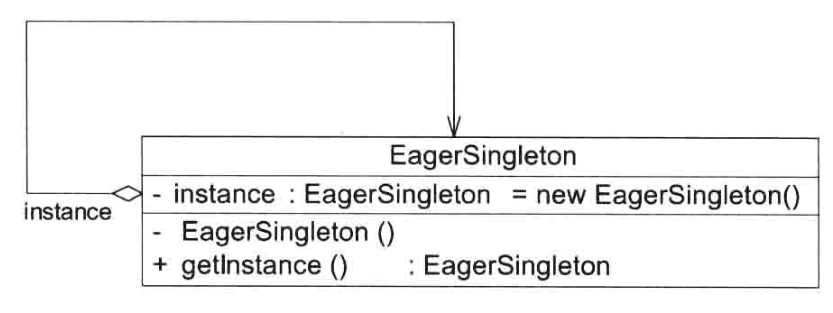
懒汉式单例类
懒汉式单例模式采用延时加载（Lazy load）技术，即需要的时候再加载实例
- 懒汉式单例在第一次调用
getInstance方法的时才实例化 - 在类加载时并不自行实例化
线程安全改进，但效率低下版本
1 | public class LazySingleton { |
相同形式不同写法
1 | public class LazySingleton { |
解释说明
- 在
getInstance方法前面增加关键字synchronized**进行线程锁定，以处理多线程同时访问**问题
问题
- 每次调用
getInstance方法都需要进行线程锁定判断 - 在高并发访问的环境中，将会导致性能大大降低
改进思考
无须对整个getInstance方法进行锁定，只是在条件判断if(instance == null)中会发生并发访问问题。
只有实例不存在的时候，才需要创建实例，进行加锁实例化。是否可以在if(instance == null)内加锁？这样就可以在实例不为null，不进行synchronized判断。
初步改进，但没有解决问题版本
1 | public class LazySingleton { |
问题说明
单纯的将锁加在instance = new LazySingleton();中，仍会发生最上面写到的“懒汉式单例存在的问题”中所说的问题，即对象不唯一的问题。
当线程A和线程B都调用getInstance()时，如果实例还没创建，则都能通过if (instance == null)的判断。而线程A和线程B只是排队来调用instance = new LazySingleton()这句语句，结果是会产生不止一个实例对象。
懒汉式单例类进一步改进
双重检查锁定（Double-Check Locking）：在synchronized锁定代码中，再进行一次instance == null判断
1 | public class LazySingleton { |
注意事项
- 使用双重检查锁定来实现懒汉式单例类，需要在静态成员变量
instance加上修饰符volatile- 被
volatile修饰的成员变量可以确保多个线程正确处理 volatile关键字会屏蔽虚拟机的代码优化，可能会导致系统运行效率低
- 被
饿汉式单例类和懒汉式单例类比较
饿汉式单例类
- 在类被加载的时候就将自己实例化。
- 优点
- 无须考虑多线程访问问题
- 调用速度和反应时间优于懒汉式单例类
- 缺点
- 由于无论系统运行时是否需要使用该单例对象，都会创建，因此资源利用效率不及懒汉式单例类
- 系统加载时，需要创建饿汉式单例对象，加载时间会较长
懒汉式单例类
- 在第一次使用时创建
- 优点
- 无须一直占用系统资源，实现延迟加载
- 缺点
- 需要处理多线程同时访问的问题
- 资源初始化可能耗费大量时间，多线程同时首次引用的概率变大，需要通过双重检查锁等机制进行控制，系统性能收到影响。
Initialization on Demand Holder （IoDH）
IoDH结合了懒汉式单例类和饿汉式单例类的优点
- 既实现了延迟加载又保证线程安全，不影响系统性能
实现方式
单例类中定义一个静态内部类。在内部类中创建单例对象。通过外部类的getInstance()返回给外界。
1 | // Initialization on Demand |
解释说明
- 静态单例对象没有作为
Singleton的成员变量直接实例化，类加载时不会实例化Singleton - 第一次调用
getInstance()会加载内部类HolderClass。内部类中定义static类型变量instance，此时会首先初始化这个成员变量，由Java虚拟机保证线程安全，确保该成员变量只能初始化一次。 getInstance()方法没有任何线程锁定，对性能不会造成影响
单例模式总结
优点
- 单例模式提供了对唯一实例的受控访问
- 节约系统资源
- 系统内存中只存在一个对象
- 对需要频繁创建和销毁的对象，单例模式提高性能
- 基于单例模式的扩展，可以提供允许可变数目的实例（多例类）
- 既节省系统资源，又解决了由于单例对象共享过多有损性能的问题
缺点
缺少抽象层，扩展性差
职责过重，一定程度上违背单一职责原则
- 即提供创建对象方法又提供业务方法（创建和本身功能耦合）
由于垃圾回收机制，如果单例对象长时间没用，可能会被当垃圾回收。
- 再次使用时重新实例化，原本的单例对象状态丢失
使用场景
- 只需要一个实例对象
- 例如唯一的序列号生成器、资源管理器
- 考虑资源消耗太大而只允许创建一个对象
- 只需要一个公共访问点
- 除了该公共访问点，不能通过其他途径访问该实例
简单工厂模式 Simple Factory Pattern
定义
定义一个工厂类，它可以根据参数的不同返回不同类的实例，被创建的实例通常都具有共同的父类。
因为在简单工厂模式中用于创建实例的方法是静态(static)方法，因此简单工厂模式又被称为静态工厂方法(Static
Factory Method)模式，它属于类创建型模式。
内容
要点：需要什么，只需要传入一个正确的参数，就可以获取所需要的对象，而无须知道其创建细节。
- 客户端通过工厂类来创建一个产品类的实例，而无须直接使用new关键字来创建对象
简单工厂模式结构图
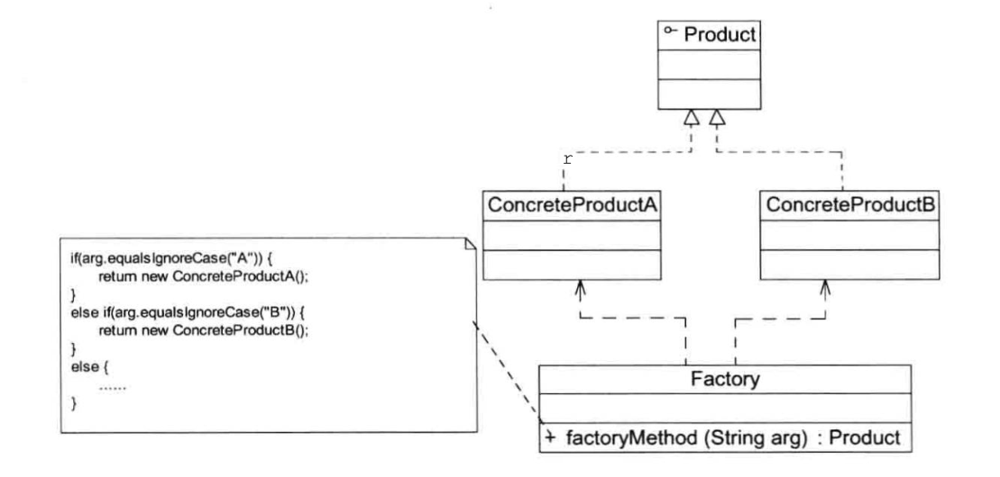
简单工厂模式主要包含3种角色
Factory(工厂角色)**：即工厂类，它是简单工厂模式的核心，负责实现创建所有产品实例**的内部逻辑。- 工厂类可以被外界直接调用，创建所需的产品对象；
- 在工厂类中提供了静态的工厂方法
factoryMethod(),它的返回类型为抽象产品类型Product。
Product(抽象产品角色)**：它是工厂类所创建的所有对象的父类，封装了各种产品对象的公有方法**.- 提高系统的灵活性，使得在工厂类中只需定义一个通用的工厂方法，因为所有创建的具体产品对象都是其子类对象。
ConcreteProduct(具体产品角色)**：它是简单工厂模式的创建目标，所有被创建的对象都充当这个角色的某个具体类的实例**。- 每一个具体产品角色都继承了抽象产品角色，需要实现在抽象产品中声明的抽象方法。
说明
- 根据实际情况设计一个产品层次结构，将所有产品类公共的代码移至抽象产品类，并在抽象产品类中声明一些抽象方法，以供不同的具体产品类来实现
- 在没有工厂类之前，客户端一般会使用new `关键字来直接创建产品对象
- 在引人工厂类之后，客户端可以通过工厂类来创建产品，在简单工厂模式中，工厂类提供了一个静态工厂方法供客户端使用，根据所传入的参数不同可以创建不同的产品对象。
代码实现
1 | public abstract class Product { |
1 | public class ConcreteProduct extends Product{ |
1 | public class Factory { |
1 | public class Client { |
创建对象和使用对象
对象相关的职责通常有3类
- 对象本身所具有的职责
- 对象本身具有的数据和行为，可通过公开的方法来实现其职责。
- 创建对象的职责
- 创建对象的方式
new关键字直接创建new简单。但是灵活性差：创建对象和使用对象耦合在一起，会违背开闭原则- 解决办法是引入工厂类，降低因为产品或工厂类改变所带来的维护工作量
- 通过反射机制创建对象
- 通过
clone()方法创建对象 - 通过工厂类创建对象
- 创建对象的方式
- 使用对象的职责
工厂模式强调：将对象的创建和使用分离
只能A创建B或A使用B，不能两种关系都有
- 这样更符合单一职责原则，有利于对功能的复用和系统的维护
能够防止用来实例一个类的数据和代码在多个类到处都是
- 构造对象还需要设置参数，环境配置等
提供一系列名字不同的工厂方法，而每个工厂方法对应一个构造函数
- 客服端可以以更加可读易懂的方法来创建对象
简单工厂模式的简化
将抽象产品类和工厂类合并，将静态工厂方法移至抽象产品类
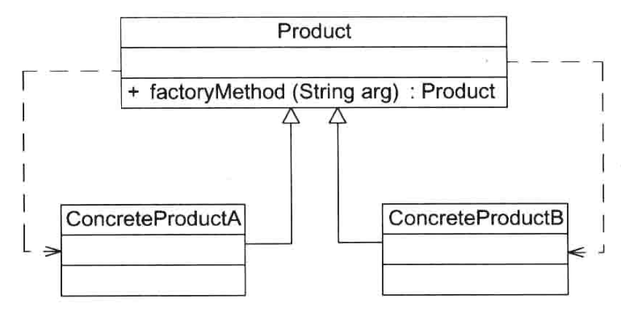
简单工厂类总结
优点
- 实现对象的创建和使用分离
- 客户端无须知道所创建的具体产品类的类名，只需要知道具体产品类所对应的参数即可
- 通过引人配置文件，可以在不修改客户端代码的情况下更换和增加新的具体产品类，在一定程度上提高了系统的灵活性。
缺点
- 工厂类责任过重
- 集中所有产品的创建逻辑
- 简单工厂模式会增加系统中类的个数
- 增加系统的复杂度和理解难度
- 系统扩展困难
- 添加新产品需要修改工厂逻辑
- 产品类型过多时，造成工厂逻辑复杂，不利于系统的扩展和维护
- 使用了静态工厂方法，工厂角色无法形成基于继承的等级结构
适用场景
- 工厂类负责创建的对象比较少
- 客户端只知道传入工厂类的参数，对于如何创建对象并不关心。
工厂方法模式 Factory Method Pattern
通常说的工厂模式指的是工厂方法模式
定义
定义一个用于创建对象的接口，让子类决定将哪一个类实例化
抽象工厂模式 Abstract Factory Pattern
定义
提供一个创建一系列相关或相互依赖对象的接口，而无须指定它们具体的类
原型模式 Prototype Pattern
定义
使用原型实例指定创建对象的种类，并且通过复制这些原型创建新的对象
建造者模式 Builder Pattern
定义
将一个复杂对象的构建与它的表示分离，使得同样的构建过程可以创建不同的表示